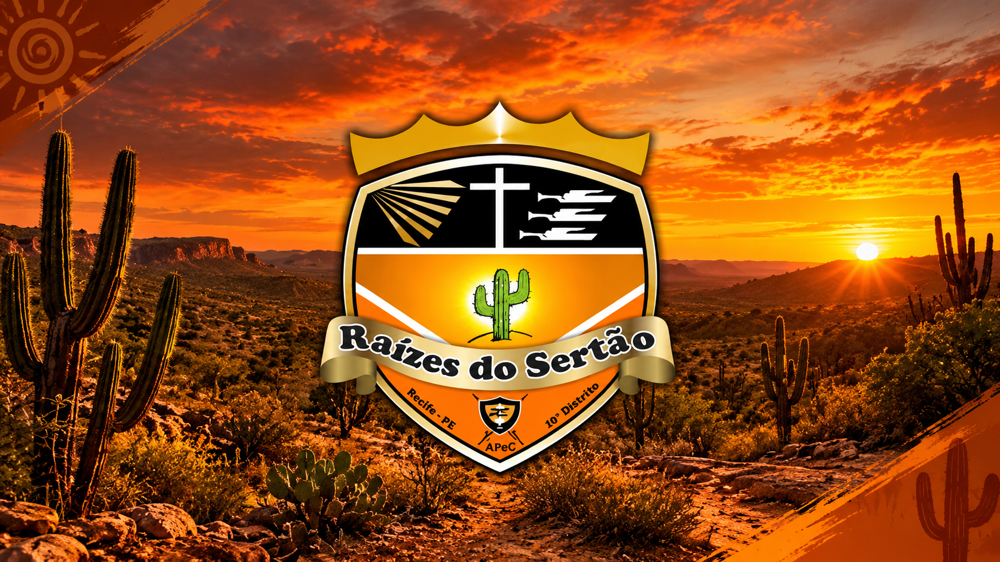

📅 Próxima atividade
Confira com a liderança a próxima reunião aberta a visitantes. As datas são confirmadas pelo WhatsApp.
Como participarDesde 2004 formando o caráter de crianças e adolescentes através da aventura, do serviço e da fé. Um clube de Desbravadores que é, antes de tudo, uma família.

Atividades públicas, registros do clube e formas de ajudar nossos desbravadores.
Confira com a liderança a próxima reunião aberta a visitantes. As datas são confirmadas pelo WhatsApp.
Como participarFotos e vídeos dos eventos que o clube já publicou.
Abrir galeriaReserve uma lavagem e contribua com as atividades do clube.
Reservar lava-jatoDesbravadores é aventura, amizade e crescimento — pra crianças e adolescentes de 10 a 15 anos. Fale com a gente e venha conhecer o clube.
👉 Quero fazer parteUm clube para crianças e adolescentes de 10 a 15 anos, com atividades de natureza, serviço à comunidade, amizade, habilidades práticas e desenvolvimento espiritual.
Acampamentos, atividades ao ar livre e aprendizado em equipe.
Solidariedade e participação em ações comunitárias.
Conheça as raízes do clube e seus projetos.
Ver nossa históriaDesbravadores é pra crianças e adolescentes de 10 a 15 anos.
Não! A Sociedade de Desbravadores está aberta a qualquer criança ou adolescente, independente de religião.
É só chamar a gente no WhatsApp — respondemos rapidinho e explicamos os próximos passos.
Chama a gente no WhatsApp que a gente te passa o endereço certinho e explica como chegar.
Isso a gente combina certinho pelo WhatsApp — os detalhes atualizados a diretoria passa direto pra você.
Sim! O maior deles agora é o Campori DSA 2027, mas o clube participa de vários encontros ao longo do ano.
Dá sim! Desbravadores acima de 16 anos passam a fazer parte da nossa liderança, ajudando a formar a próxima geração. Chama a gente no WhatsApp pra saber mais.